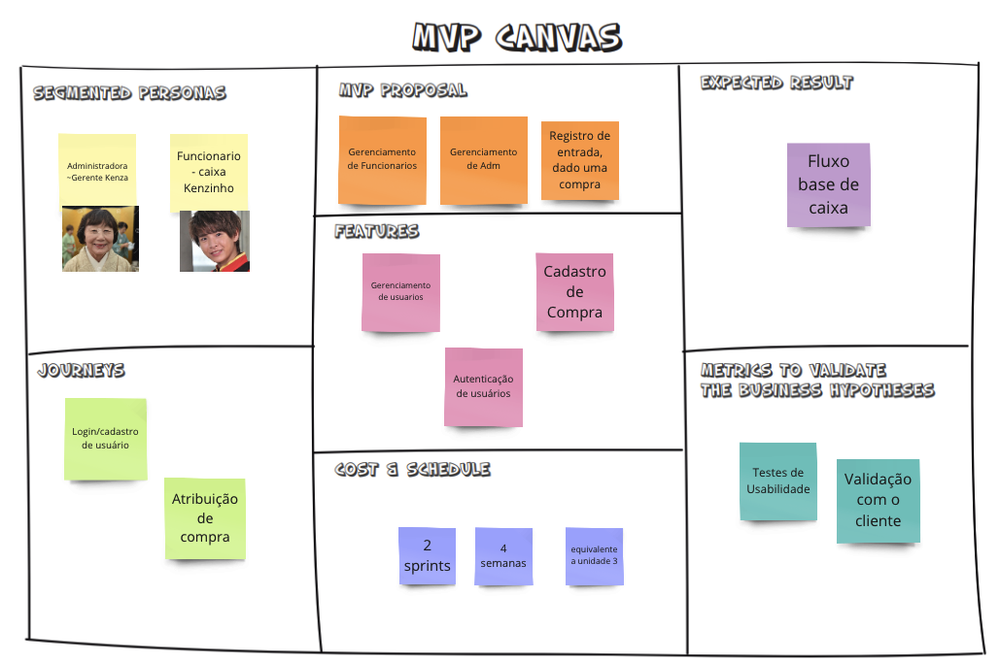
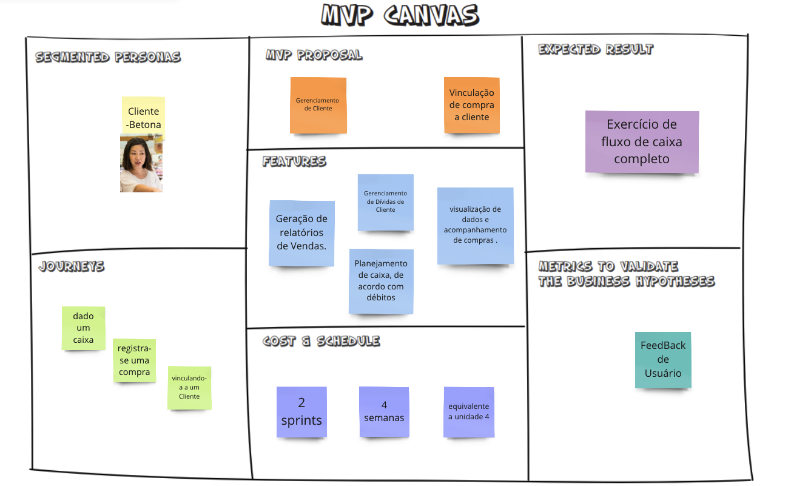

MVPS`s
Definição das atividades presentes em cada MVP
No nosso projeto, a análise de viabilidade para construção dos MVP`s foi feito ultilizando Matriz de priorização, afim de se identificar o que é mais importante, ela conta com 2 critérios: Valor de negócio (VALOR) e Complexidade Técnica (ESFORÇO).
Na tabela a seguir, referente a Valor de Negócio, cada US recebe uma nota de 1 a 5, aparti de 3 sub-tópicos:
-
Necessário:
-
Fundamental para o funcionamento eficaz do negócio.
-
Urgente:
-
Precisam ser atendidas imediatamente. De impacto imediato nos resultados ou na continuidade do produto.
-
Desejavel:
- Aprimoramento, visando a satisfação do cliente.
Na coluna, Média Complexidade Técnica, cada US possui a media das notas dadas por cada integrante do grupo, de 1 a 5, aparti de 2 sub-tópicos:
- Tempo para realizar a Atividade;
- Nível de difulculdade de execução;
| US | É necessário?(2pt) | É urgente? (2pts) | É desejavel? (1pt) | Soma Valor de Negócio | Média Complexidade Técnica |
|---|---|---|---|---|---|
| [US01] Eu como administrador, quero ser capaz de deletar um funcionário, para caso não faça mais parte da minha empresa. | 2 | 2 | 1 | 5 | 1,67 |
| [US02] Eu como administrador, quero ser capaz de editar um funcionário, para poder mudar as informações do mesmo. | 2 | 1 | 1 | 4 | 1,60 |
| [US03] Eu como administrador, quero ser capaz de criar um funcionário, para que ele possa exercer a função dele. | 2 | 2 | 1 | 5 | 1,80 |
| [US04] Eu como administrador, quero ser capaz de ler um funcionário ou todos os funcionários, para poder ter relatórios dos mesmos. | 2 | 2 | 1 | 5 | 1,60 |
| [US05] Eu como funcionário, quero ser capaz de cobrar uma compra, para saber que a compra a prazo foi paga. | 1 | 2 | 1 | 4 | 1,60 |
| [US06] Eu como funcionário, quero ser capaz de criar um cliente, para poder atribuir compras. | 1 | 2 | 1 | 4 | 1,80 |
| [US07] Eu como administrador, quero ser capaz de deletar um administrador, para caso não faça mais parte da minha empresa. | 2 | 2 | 1 | 5 | 1,60 |
| [US08] Eu como administrador, quero ser capaz de editar um administrador, para poder mudar as informações do mesmo. | 2 | 2 | 1 | 5 | 1,60 |
| [US09] Eu como administrador, quero ser capaz de criar um administrador, para que ele possa exercer a função dele. | 2 | 2 | 1 | 5 | 1,60 |
| [US10] Eu como administrador, quero ser capaz de ler um administrador ou todos os administradores, para poder ter relatórios dos mesmos. | 2 | 2 | 1 | 5 | 1,60 |
[US11] Eu como administrador, quero ser capaz de criar um produto, para ser registrado em compras |
2 | 0 | 1 | 3 | 2,30 |
[US12] Eu como administrador, quero ser capaz de editar um produto, para atualizar suas informações |
2 | 0 | 1 | 3 | 2,00 |
[US13] Eu como administrador, quero ser capaz de deletar um produto, para que não seja atribuído a compras |
2 | 0 | 1 | 3 | 1,80 |
| [US14] Eu como administrador, quero ser capaz de criar um cliente, para poder cobrar uma venda. | 2 | 0 | 1 | 3 | 1,80 |
| [US15] Eu como administrador, quero ser capaz de editar um cliente, para poder dizer se já foi pago. | 1 | 0 | 1 | 2 | 1,80 |
| [US16] Eu como administrador, quero ser capaz de deletar um cliente, para dizer que não é mais meu cliente. | 1 | 0 | 1 | 2 | 1,80 |
| [US17] Eu como administrador, quero ser capaz de ler um cliente ou todos os clientes, para verificar quantos clientes tem. | 2 | 2 | 1 | 5 | 2,60 |
| [US18] Eu como administrador, quero ser capaz de gerar um relatório do cliente, para poder cobrar uma venda. | 2 | 2 | 1 | 5 | 3,70 |
| [US19] Eu como administrador, quero ser capaz de ler um relatório existente, para confirmar se há pendências ou não. | 2 | 1 | 1 | 4 | 2,10 |
| [US20] Eu como funcionário, quero ser capaz de atribuir uma compra a um cliente, para gerenciar dívidas | 2 | 2 | 1 | 5 | 2,60 |
| [US21] Eu como administrador, quero ser capaz de excluir uma atribuição de compra de um cliente, para casos de engano | 1 | 1 | 1 | 3 | 1,50 |
| [US22]Eu como funcionário, quero ser capaz de criar uma compra, para o rastreamento das vendas do dia no sistema. | 2 | 2 | 1 | 5 | 2,30 |
| [US23] Eu como administrador, quero ser capaz de criar uma compra, para poder cobrá-la. | 2 | 2 | 1 | 5 | 1,80 |
| [US24] Eu como administrador, quero ser capaz de editar uma compra, para dizer se o valor aumentou. | 2 | 2 | 1 | 5 | 1,80 |
| [US25] Eu como administrador, quero ser capaz de deletar uma compra, para dizer que ela já foi paga. | 2 | 2 | 1 | 5 | 1,60 |
| [US26]Eu como administrador, quero ser capaz de ler uma compra, para fazer um relatório. | 2 | 1 | 1 | 4 | 1,60 |
| [US27] Eu como administrador, quero ser capaz de criar um caixa, para poder ter vendas. | 2 | 2 | 1 | 5 | 1,60 |
| [US28] Eu como administrador, quero ser capaz de ler um caixa, para poder gerar as informações sobre o mesmo. | 2 | 1 | 1 | 4 | 1,60 |
| [US29] Eu como administrador, quero ser capaz de editar um caixa, para mudar o responsável. | 2 | 2 | 1 | 5 | 1,60 |
| [US30]Eu como administrador, quero ser capaz de deletar um caixa, para dizer que ele não existe mais na loja. | 2 | 2 | 1 | 5 | 1,60 |
| [US31] Eu como administrador, quero ser capaz de gerar o relatório de um caixa, para ter um resumo do dia. | 2 | 2 | 1 | 5 | 1,60 |
| [US32]Eu como administrador, quero ser capaz de ler o relatório de um caixa, para ter um acesso a relatórios de dias anteriores. | 2 | 1 | 1 | 4 | 1,60 |
Cada Épico receberá seu grau de prioridade de acordo com a média ponderada desses critérios para cada US: (ESFORÇO + (VALOR DO ÉPICO * 2))/3 = PONDERAÇÃO. Um Épico pode ter sido Sub-divido, contemplando apenas uma parte das suas US`s.
- Esforço -> Soma das Médias da Complexidade Técnica das US`s relacionadas
- Valor do Épico -> Soma das Médias da Complexidade Técnica das US`s relacionadas
| Epico | Capacidade | História de usuário | Esforço | Valor do Épico | Ponderação |
|---|---|---|---|---|---|
| EP01 - Partes Integrantes da Loja | CA01 - Gestão de Funcionário | US01, US02, US03, US04, US05, US06 | 6.67 | 19 | 14.9 |
| EP01 - Partes Integrantes da Loja | CA02 - Administrador | US07, US08, US09, US10, US11, US12, US13 |
3.4 | 8 | 6.4 |
| EP01 - Partes Integrantes da Loja | CA03 - Gestão de Cliente | US14, US15, US16, US17, US18, US19 | 6,4 | 19 | 14.08 |
| EP02 - Vendas | CA04 - Gestão de Compra | US20, US21, US22, US23, US24, US25, US26 | 11.5 | 17 | 15.16 |
| EP02 - Vendas | CA05 - Caixa | US27, US28, US29, US30, US31, US32 | 13.3 | 25 | 21.1 |
Dados os Pesos, a ideia para a construção e divisão dos MVP's, deu-se a parti de buscar realizar primeiramente parte dos Épicos, cujas tarefas possuam maior Prioridade (Valor), mas menor esforço.
MVP 1

A imagem acima mostra um MVP 1 para um sistema de gerenciamento de caixa. A imagem mostra que o MVP 1 é um produto básico que pode ser usado para registrar vendas e entradas de caixa.
A imagem mostra que o MVP 1 inclui as funcionalidades de CRUD de funcionario, administrador e compra, bem como as relações envolvidas entre cada.
| MVP 1 | Justificativa |
|---|---|
| US01 - Eu como administrador, quero ser capaz de deletar um funcionário, para caso não faça mais parte da minha empresa. US02 - Eu como administrador, quero ser capaz de editar um funcionário, para poder mudar as informações do mesmo US03 - Eu como administrador, quero ser capaz de criar um funcionário, para que ele possa exercer a função dele. US04 - Eu como administrador, quero ser capaz de ler um funcionário ou todos os funcionários, para poder ter relatórios dos mesmos. |
O administrador deve ser capaz de poder ter funcionarios e manipular eles no programa. |
| US05- Eu como funcionário, quero ser capaz de cobrar uma compra, para saber que a compra a prazo foi paga. | O Funcionario deve ser capaz de vinculando uma compra a um cliiente |
| US07 - Eu como administrador, quero ser capaz de deletar um administrador, para caso não faça mais parte da minha empresa. US08 - Eu como administrador, quero ser capaz de editar um administrador, para poder mudar as informações do mesmo. US09 - Eu como administrador, quero ser capaz de criar um administrador, para que ele possa exercer a função dele. US10 - Eu como administrador, quero ser capaz de ler um administrador ou todos os administradores, para poder ter relatórios dos mesmos. |
O administrador deve ser capaz de criar uma compra e atribuir a um cliente e deve poder deletar a mesma. Bem como o funcionário |
| US22 - Eu como funcionário, quero ser capaz de criar uma compra, para o rastreamento das vendas do dia no sistema. US23 - Eu como administrador, quero ser capaz de criar uma compra, para poder cobrá-la. US24 - Eu como administrador, quero ser capaz de editar uma compra, para dizer se o valor aumentou. US25 - Eu como administrador, quero ser capaz de deletar uma compra, para dizer que ela já foi paga. US26 - Eu como administrador, quero ser capaz de ler uma compra, para fazer um relatório. |
Gestão de compra, permitindo criar, editar, deletar compras. |
MVP 2

A imagem acima mostra um MVP 2 para o mesmo sistema de gerenciamento de caixa.
A imagem mostra que o MVP 2 inclui o restante das funcionalidades esperadas no nosso produto, nele se encontra o CRUD de cliente, a materialização de caixas, onde pode-se segregar as vendas e gerar difntes relatorios a depender do adm.
| MVP 2 | Justificativa |
|---|---|
| US06 - Eu como funcionário, quero ser capaz de criar um cliente, para poder atribuir compras. | O funcionario deve poder criar um cliente e atribuir uma venda a ele para poder cobra-la depois. |
| US14 - Eu como administrador, quero ser capaz de criar um cliente, para poder cobrar uma venda. US15 - Eu como administrador, quero ser capaz de editar um cliente, para poder dizer se já foi pago. US16 - Eu como administrador, quero ser capaz de deletar um cliente, para dizer que não é mais meu cliente. US17 - Eu como administrador, quero ser capaz de ler um cliente ou todos os clientes, para verificar quantos clientes tem. |
O administrador deve poder manipular um cliente desde cria-lo ate poder deletar e saber quantos tem. |
| US18 - Eu como administrador, quero ser capaz de gerar um relatório do cliente, para poder cobrar uma venda. | O administrador deve ser capaz de gerar o relatório de um cliente para cobrar uma venda ou várias do mesmo cliente. |
| US20 - Eu como funcionário, quero ser capaz de atribuir uma compra a um cliente, para gerenciar dívidas. US21 - Eu como administrador, quero ser capaz de excluir uma atribuição de compra de um cliente, para casos de engano |
O funcionario deve poder atribuir uma venda a um cliente para poder cobra-lo no futuro. |
| US22 - Eu como funcionário, quero ser capaz de criar uma compra, para o rastreamento das vendas do dia no sistema. US23 - Eu como administrador, quero ser capaz de criar uma compra, para poder cobrá-la. US24 - Eu como administrador, quero ser capaz de editar uma compra, para dizer se o valor aumentou. US25 - Eu como administrador, quero ser capaz de deletar uma compra, para dizer que ela já foi paga. US26 - Eu como administrador, quero ser capaz de ler uma compra, para fazer um relatório. |
O administrador deve ser capaz de criar uma compra e atribuir a um cliente e deve poder deletar a mesma. |
| US27 - Eu como administrador, quero ser capaz de criar um caixa, para poder ter vendas. US28 - Eu como administrador, quero ser capaz de ler um caixa, para poder gerar as informações sobre o mesmo. US29 -Eu como administrador, quero ser capaz de editar um caixa, para mudar o responsável. US30 - Eu como administrador, quero ser capaz de deletar um caixa, para dizer que ele não existe mais na loja. |
O administrador deve ser capaz de criar um caixa e atribuir a um funcionário responsável e deve poder deletar o mesmo. |
| US31 - Eu como administrador, quero ser capaz de gerar o relatório de um caixa, para ter um resumo do dia. US32 - Eu como administrador, quero ser capaz de ler o relatório de um caixa, para ter um acesso a relatórios de dias anteriores. |
O administrador deve ser capaz de gerar o relatório do caixa para registrar em forma de documento os fluxos financeiros |